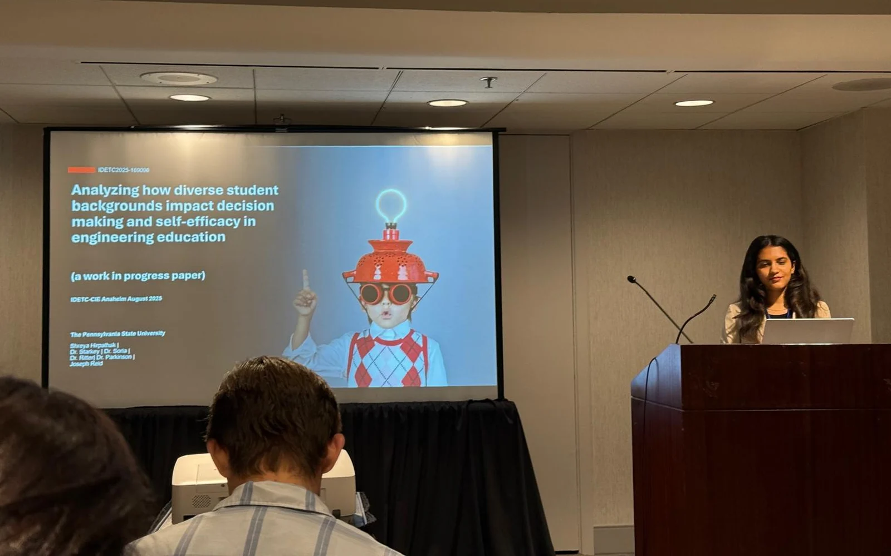
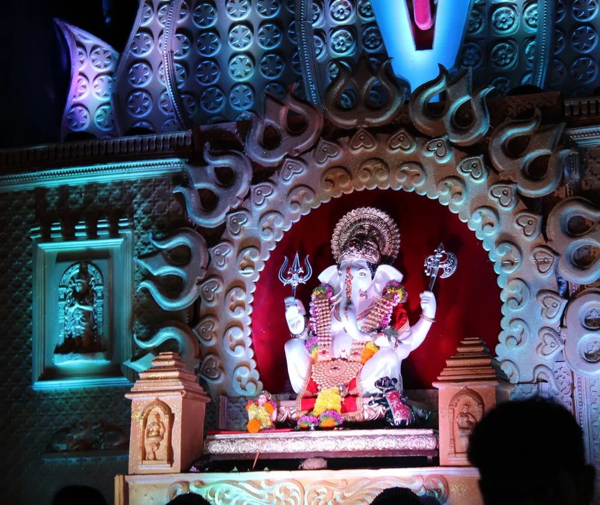
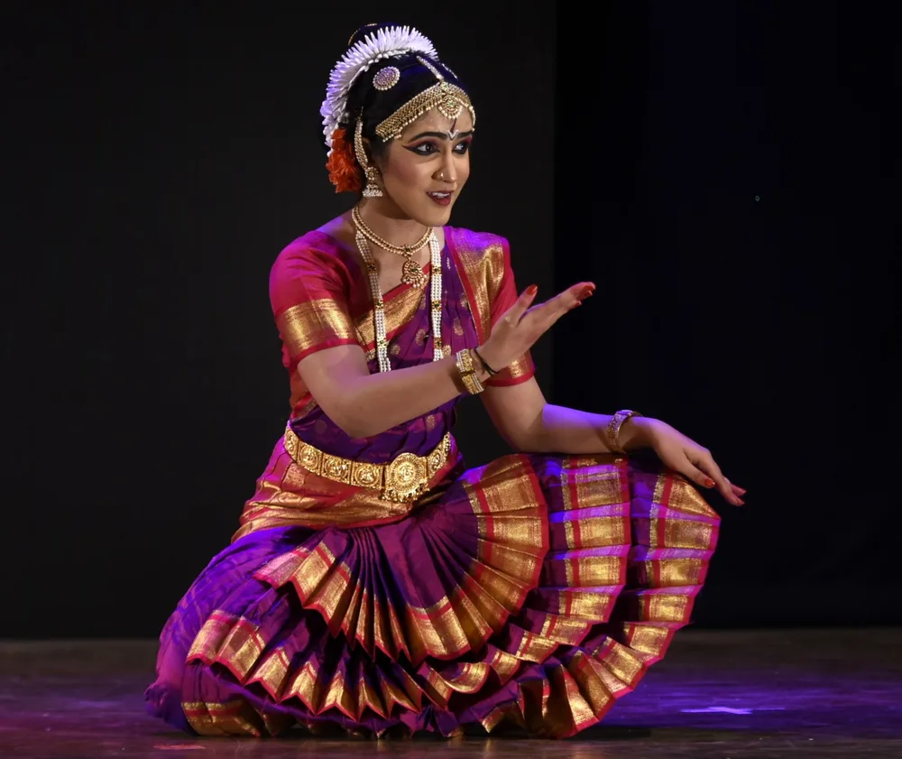
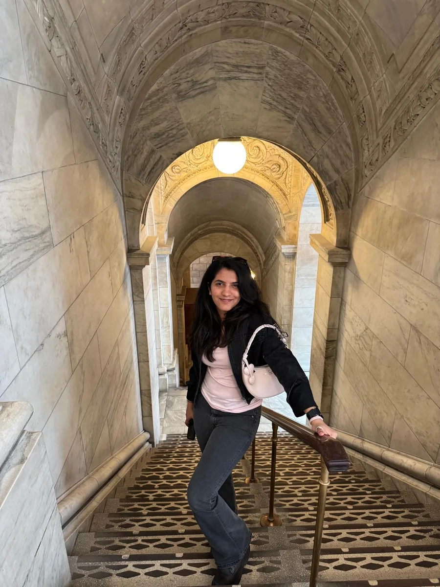
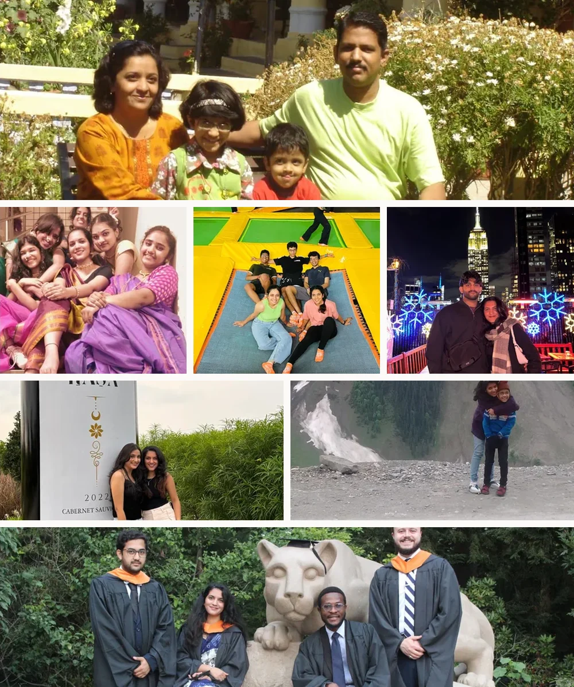
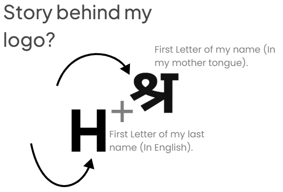

Hi, I’m Shreya.
Turning curiosity into experiences that leave a mark.
Work.
Four studies, each opening with its impact and the methods behind it.
-

UX research Understanding how different demographic backgrounds affect user experiences17-item scale, ~2,000 students
Built during my M.S. thesis at Penn State: a scale that measures how confident engineering students feel making things in a makerspace.
Published at ASME IDETC-CIE 2026 · IDETC2026-190931 ↗Presented at ASME IDETC-CIE, Houston ↗★ 2nd place Best Paper CERS 2026, Penn State ↗ ASME IDETC-CIE, Anaheim ↗ -
UX research
What a moved button costs users
5 timed tasks across 2 UI versions
A research proposal from IST 520 at Penn State, measuring the mental effort users pay when a familiar interface changes.
-
Smart product design
A child lock parents control from their phone
From injury data to a working prototype
A solo graduate project at Penn State: a smart child lock designed around the parents who use it, taken from research to a working ESP32 prototype.
-
Product research
Making products quieter with 3D-printed lattices
6 lattices tested, the best 11.4 dB quieter
A graduate research project at Penn State, testing which 3D-printed lattice structures cut transmitted sound the most.
Hi, I'm Shreya.





“Ever since childhood, stories have held me in their grip. My storytelling grew from daydreaming into writing, dance and doodling and eventually into prototypes, designs and research.”
I just graduated with an M.S. in Engineering Design from Penn State ('26). My time at Penn State was focused on research, where I studied how demographic backgrounds can affect behaviour and experiences.
I studied User Experience (UX), Human-Centered Design, Design Research and Data Analysis. I've taught 520+ first-year engineers design process and prototyping and presented at ASME IDETC-CIE twice.
I trained as an industrial designer (B.Des, MIT Institute of Design, Pune) and have done five internships making products, the kind that end up in usability reports. That's why I moved toward research.
Looking for UX Researcher / UX Designer roles where research and making sit at the same table.
Research
- Survey & scale design
- Interviews & contextual inquiry
- CFA · item response theory
- Task & journey analysis
- Personas & design briefs
- Competitive benchmarking
Design
- Figma · Framer
- Interaction & HMI design
- Rhino · Fusion 360
- KeyShot · Blender
- Photoshop · Illustrator
- RStudio · Tableau
- Data visualisation
Also
- Prototyping & 3D printing
- ESP32 electronics
- English · Hindi · Marathi
- German (basic)
Where I've learned by doing.
From Pune to Penn State.
Nov ’24 – NowUX ResearcherThe Pennsylvania State UniversityGraduate student research · Thesis
- Designed and ran a two-round survey of 1,910 first-year engineering students.
- Validated 16 of 17 items (94%) with confirmatory factor analysis; used IRT to isolate 2 background factors.
- Lead author of the 17-item Makerspace Self-Efficacy Scale (MSES): 2nd place Best Paper at ASME IDETC-CIE 2026, nominated for ASME's special edition journal.
Aug ’24 – Aug ’26Teaching Assistant, EDSGN 100The Pennsylvania State University
- Taught design process, prototyping and CAD (Fusion 360, SolidWorks) across 13 sections over 6 semesters.
- ~520+ first-year engineering students; lectures, office hours and project mentoring.
Jan ’24 – Jun ’24Product & Industrial DesignTherefore Design, PuneInternship
- B.Des capstone: redesigned the “Calidus” stability chamber for LabIndia.
- On-site interviews with factory workers and repair technicians; benchmarked 10+ products.
- Cut assembly from 15 steps to 5 (67%); 970 mm footprint vs ~1,300 mm; redesigned a 6-screen HMI.
May ’23 – Jun ’23Product ResearchGodrej & Boyce · Interio SeatingInternship
- Benchmarked 17 gaming chairs across 7 brands.
- Survey of 90 respondents plus 10 interviews: 93.6% had no gaming chair.
- Synthesised 4 personas and 3 design briefs across ₹8,000–₹25,000 tiers.
Aug ’22 – Sep ’22Product DesignGuddee (startup)Internship
- Designed products that bring traditional Indian artisan crafts into contemporary daily life.
Jun ’22 – Jul ’22Packaging DesignChef at Home (startup)Internship
- Designed launch packaging for “Zangbox”, cook-it-yourself meal kits curated with five-star hotel chefs.
2024 – 2026M.S., Engineering Design InnovationThe Pennsylvania State University
- Thesis research on makerspace self-efficacy (MSES).
- Two ASME IDETC-CIE papers; CERS 2026 presenter.
2020 – 2024B.Des., Industrial DesignMIT Institute of Design, Pune
- Capstone at Therefore Design (Calidus, for LabIndia).
- Featured on Packaging of the World (Feb 2023) for “Gingko” sushi take-away packaging.
Design Jenga: building blocks of design.
Every real block is a step I use: hover or tap it to see where I used it. Some blocks only look like process: pull those out without toppling the tower.
Hover a block · tap to pull · drag to spin
one Coffee chat · 20 min Video call or in person
What's on your mind?
Let's discuss design, books, opportunities and conspiracy theories.